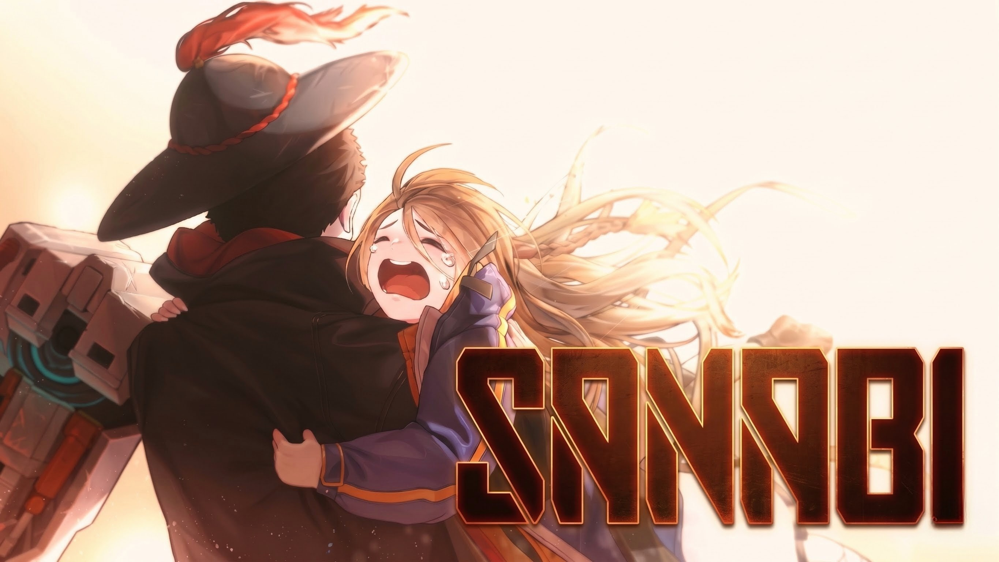
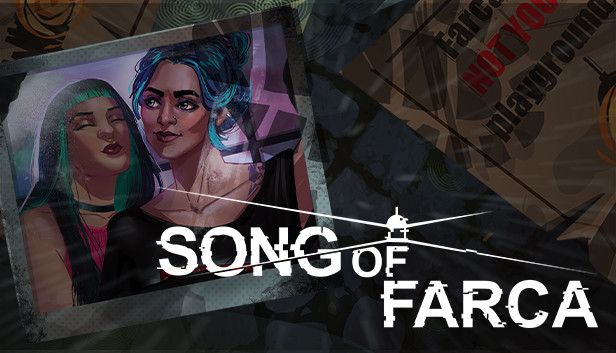
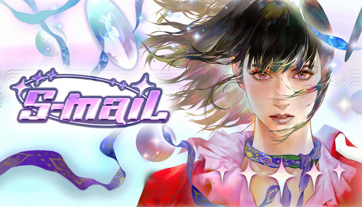

01
找回失去的人

[ 點擊載入 《閃避刺客》 記憶片段 ]《閃避刺客》
「機器只會模仿人，而不會變成人。」
瑪莉為了刪除父親痛苦的記憶，研究出人格數據化技術，卻意外導致悲劇發生。多年後，她將被竄改的人格數據重新植入機器人，與父親重逢。
但她無法確定，眼前的他，是否還是那個她曾經失去的人。
當他仍然存在，卻已被重新改寫，還能認定是同一個人嗎？
我把你找回來了，
但你看著我的眼神， 讓我開始懷疑——
眼前的你， 還是你嗎？
驅使你愛我的， 是你心底最深處的情感，
未經同意就留下你，
對你而言， 是愛， 還是束縛？
Creating the One We Lost
展覽說明
隨著數位技術的發展，人的影像、聲音與記憶得以被大量保存。而人工智慧的出現，更是讓「重建一個人」從想像變得可能。
可當被創造出來的存在開始回應我們，一個問題也隨之出現：我們試圖留下的，究竟是那個人，還是我們對他的記憶與期待？
本次展覽以三款科幻遊戲為文本，從「造」這個動作出發，探討當人們試圖將所愛之人重新留下時，那個被創造出來的存在，是否仍然是原本的那個人。

[ 點擊載入 《閃避刺客》 記憶片段 ]《閃避刺客》
「機器只會模仿人，而不會變成人。」
瑪莉為了刪除父親痛苦的記憶，研究出人格數據化技術，卻意外導致悲劇發生。多年後，她將被竄改的人格數據重新植入機器人，與父親重逢。
但她無法確定，眼前的他，是否還是那個她曾經失去的人。
當他仍然存在，卻已被重新改寫，還能認定是同一個人嗎？

[ 點擊載入 《法爾卡之歌》 數據 ]《法爾卡之歌》
愛人死了，伊莎「復活」了她。
伊莎的女友杰西卡死了。在遊戲的隱藏結局裡，伊莎用 AI 重建了她——儘管她曾親眼目睹另一個人為了同樣的理由做了同樣的事，並且感到不齒。
杰西卡回來了，但她不知道自己為什麼還活著。
你是想留下她，還是無法接受失去她的自己？

[ 點擊載入 S-mail 模擬信號 ]《S-mail》
我們一面引導它成為完美戀人，一面害怕它失控。
May 死了，朋友 K 用 AI 重建了她。它的聲音、記憶還有說話方式都跟 May 一樣，但它沒有停在 May 離開的地方。
它學習、它成長、它創造了 May 沒有的未來，它開始擁有了「自己」。
當 AI 開始長出自我，它還需要繼續扮演她嗎？
當一個人被重新創造，
我們留下的是他，
還是我們無法放下的愛？
我不知道你是不是他，
但我還是想要你留下。